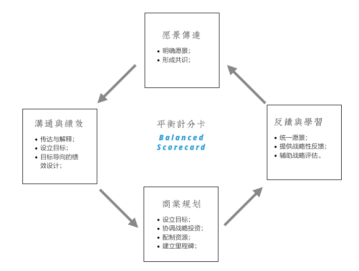
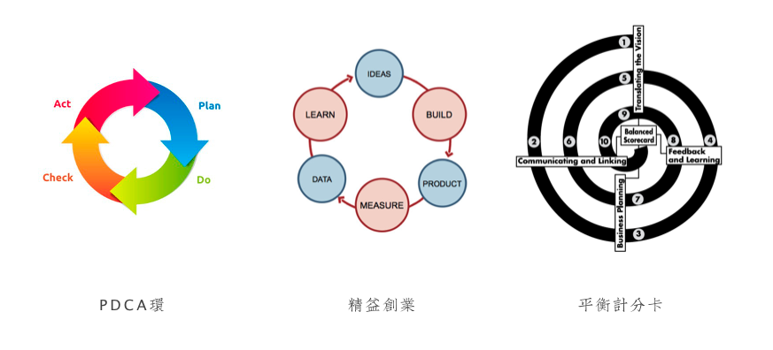

《战略十篇》的第七篇书稿，来自于Robert S.Kaplan和David P.Norton，原文刊于《哈佛商业评论》2007年7期（链接）。
战略进入到执行层次时便不再是少数战略规划者的游戏，而成为贯穿组织的共同行为，这里的「共同」所指:
- 对远期目标的共同认识;
- 认定战略执行需要各部门共同协作以及必须与绩效相关联；
- 共同协作需要共同的规划过程；
- 战略执行是共同的反馈和学习机制。
平衡计分卡（Balanced Scorecard）正是为此四个目的而发明——期待用一种可衡量的过程和工具，帮助战略规划者：
- 解释和传递共同愿景；
- 促进沟通和绩效关联；
- 辅助商业规划；
- 反馈和成长。
这四点成为战略管理的四大核心过程，可通过平衡计分卡的形式进行管理：

通过对这四大核心过程的管理，平衡计分卡的出现丰富了企业对于愿景和战略管理的手段，管理企业愿景和战略，不只是通过财务指标，还包括：
- 内部业务流程；
- 学习和成长；
- 客户。
本文完成于1992年，此三个衡量公司表现的额外指标体现着当时公司治理的风向标，即上世纪90年代的大部分企业已经认识到：
- 内外部信息对于企业竞争力、投资、资产管理、以及决策的影响；
- 如果只追求财务指标，其滞后性不利于企业追求中长期经营目标；
- 企业的成长来自于内部能力建设；
- 优秀的内部流程和执行力是成长的基础；
- 应把客户价值放在企业的核心战略和愿景中。
这些公司治理的趋势一直延续，从内部流程优化、以客户为中心、到学习型组织的出现，因此平衡计分卡符合企业发展的大环境趋势，其理论思想到今天仍然受用，例如尊重数据、迭代演进、多角度和组合式的目标、与系统思考。
无论是制造业中的戴明环（PDCA Ring），或是精益创业中的Build-Measure-Learn模型，都可以找到平衡计分卡的影子，而后者更具备组织级别的现实意义——前两者的目标依然在于制造（Build），而不在组织成功。

另一个平衡计分卡所倡导的基础思想是系统思考：当我们只关注财务表现（Financial Performance）的时候，必然导致对系统思考的疏忽。
目前有一种风潮，特别是在精益创业理论出现以后，传统严格的战略到执行的过程被批评、取而代之的是更拥抱变化和轻量级的制造过程，更有甚者宣称「战略已死（Strategy is Dead）」，认为「制造就是一切（Build first）」。
此观点看到了战略规划的问题——规划与执行的脱节，却又引入了新的问题：当我们说「制造就是一切」的时候，可能导致「非系统思考」，事实上，这种思想的结果是从严格规划突然转向自由建造，重点在于是否可工作，而不在于追求平衡（Balanced）。
这种轻量级的制造、跟踪、和学习过程虽然在一定程度上构建了一个学习型组织的基石，但如果它让实践者忽略了系统思考，便得不偿失，毕竟我们所谈论的上下文，是有着长远经营目标的公司治理，而非从0到1的创业公司。
平衡计分卡的表现形式反而显得不那么重要，我个人对于这种耗时长、过程复杂的方法是否依然适应当前企业特点持保留态度，主要因以下几点：
- 企业所提供服务或产品的生命周期在大大缩短；
- 企业年轻一代雇员对工作的定义发生改变；
- 企业从产品公司到服务公司再到智力工作者公司（所有公司可能都变成科技公司）的转变。
但这并不能否定其理论基础的价值，即我们需要在战略和执行之间找到一种介质（Media）包含以下职责：
- 可帮助愿景进行解释；
- 可帮助战略进行传播；
- 可帮助战略连接到长期目标与资源分配；
- 可帮助平衡多个战略投资形成合力；
- 可帮助战略进行反馈和演进。
同时这种介质倡导以下原则：
- 可传播的愿景胜于准确的愿景；
- 平衡胜于结果；
- 组织成功胜于单点改进；
- 可演进胜于固守标准。
对于战略咨询者，平衡计分卡的意义在于理解战略规划和管理的核心：
- 寻找一种介质，帮助融合战略和执行（例如平衡计分卡）；
- 明确此种介质的职责；
- 构建此种介质在运行中所遵守的原则；
理解了这一核心，可以让我们在不同的战略咨询场景中，设计出战略规划和管理的实施框架，以适合企业对侧重点、范围、目标、和时间长短的不同需要，最终实现企业战略和执行的融合，帮助企业走向更加平衡的组织成功。